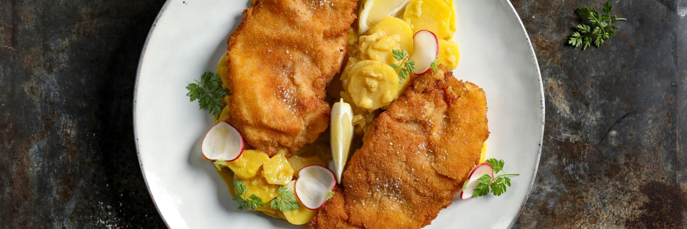
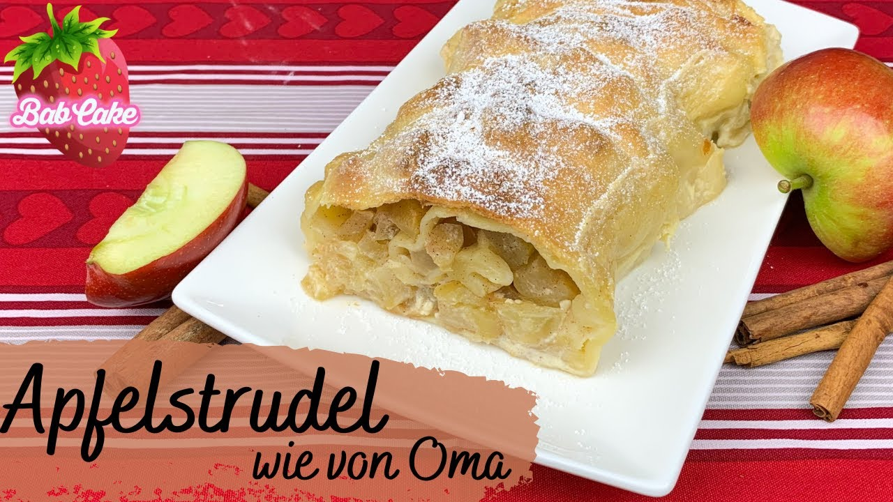
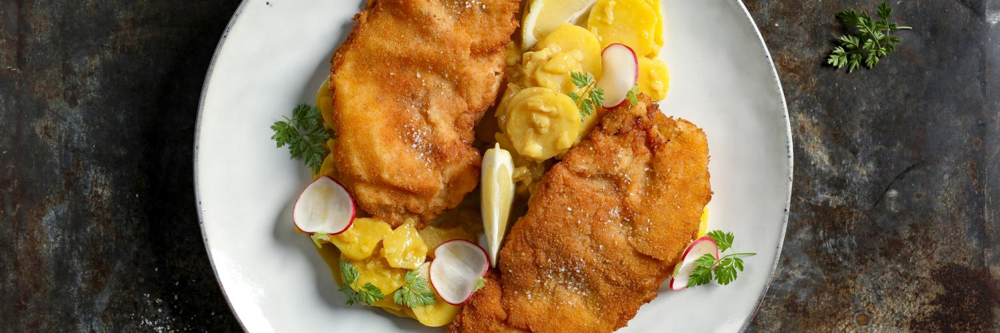
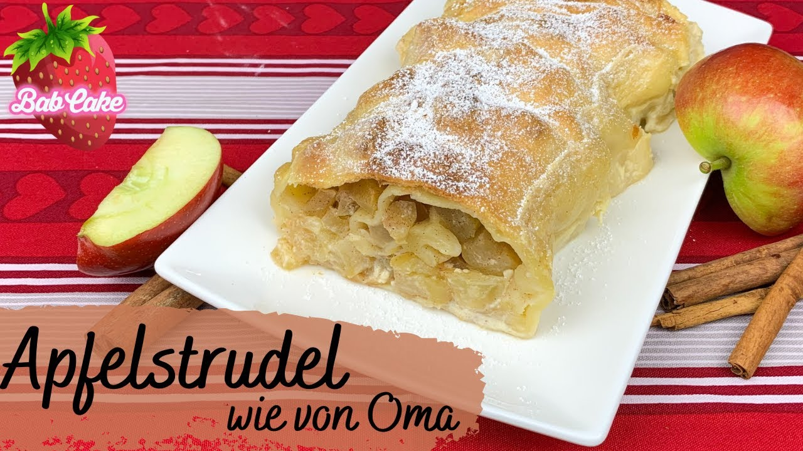
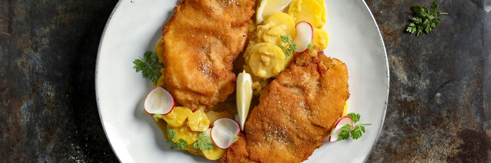
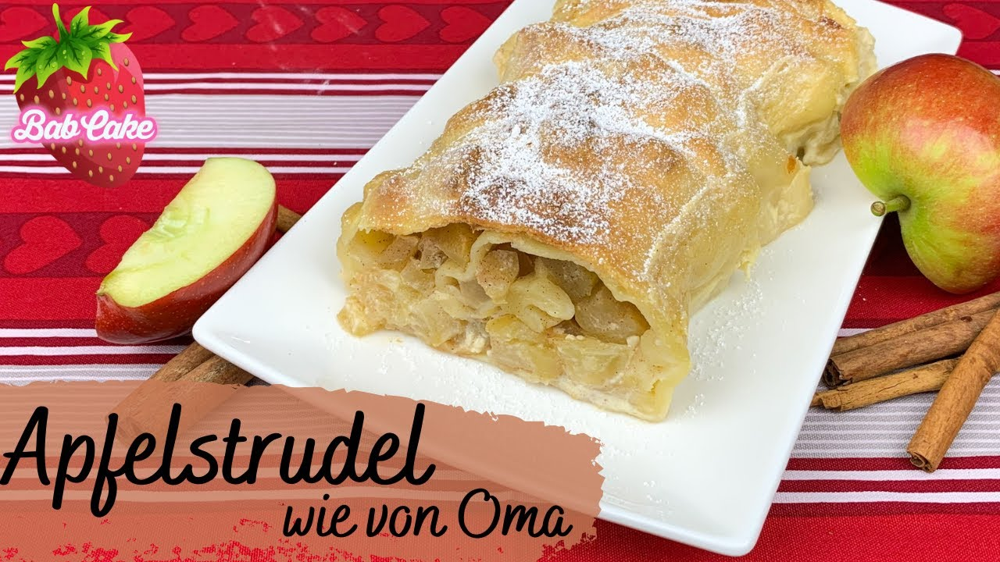
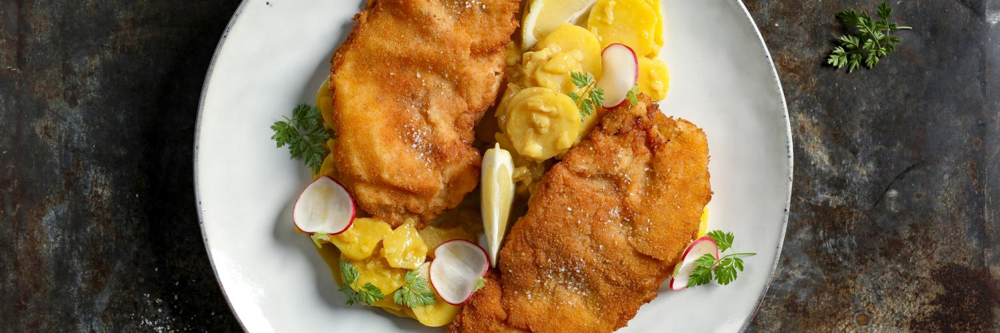
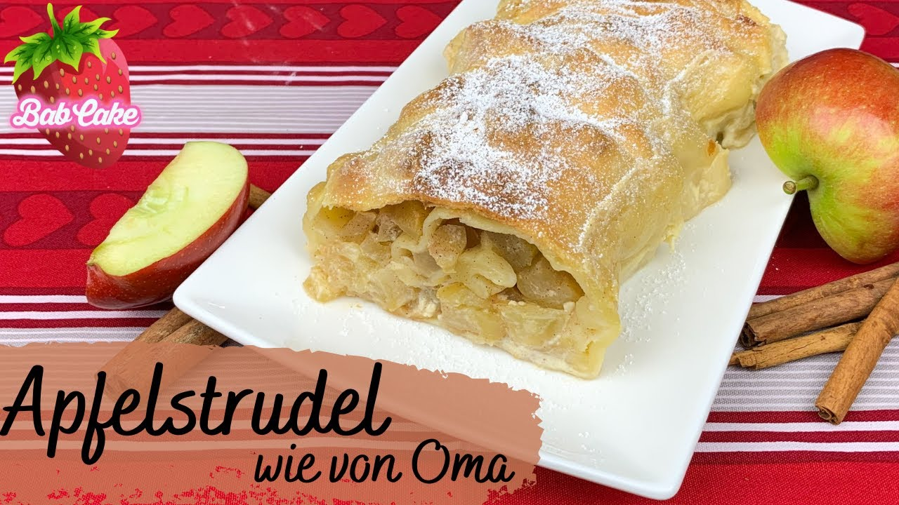

| Ingredients | Quantity |
|---|---|
| Flour | 4 cups |
| Warm water | 1 1/2 cups |
| Salt | 2 tsp |
| Yeast | 1 packet |
Step 1: Mix the yeast and warm water, then wait a few minutes.
Step 2: Add flour and salt, then knead the dough for a while.
Step 3: Shape into pretzels and bake until golden brown.
Source: King Arthur Baking
| Ingredients | Quantity |
|---|---|
| Chicken or pork cutlets | 4 pieces |
| Eggs | 2 |
| Bread crumbs | 1 cup |
| Flour | 1/2 cup |
Step 1: Pound the cutlets flat and season with salt and pepper.
Step 2: Coat them in flour, then eggs, then breadcrumbs.
Step 3: Fry them until they’re golden brown and crispy.
Source: Daring Gourmet
| Ingredients | Quantity |
|---|---|
| Puff pastry | 1 sheet |
| Apples | 3, sliced |
| Sugar | 1/2 cup |
| Cinnamon | 1 tsp |
Step 1: Mix apples, sugar, and cinnamon in a bowl.
Step 2: Roll out the pastry and fill it with the apple mix.
Step 3: Bake it in the oven at 375°F until golden brown.
Source: AllRecipes